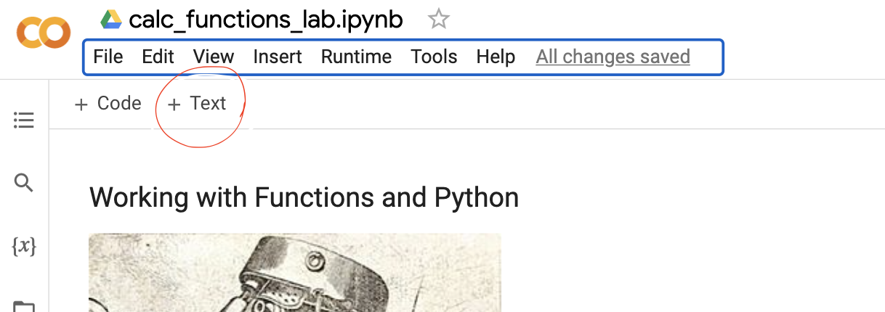

Working with Functions and Python
Contents
Working with Functions and Python#

OBJECTIVES
Use text, symbols, graphs, and tables to represent functions
Identify key characteristics of linear, quadratic, exponential, logarithmic, and trigonometric functions
Explore polar form of functions and their plots
import numpy as np
import matplotlib.pyplot as plt
Using text and symbols#
For the remainder of the class, we will work to present our final work in written form using the computer. Paper and pencil can be handy for scratching out our ideas and work, but at the end of this we aim to formalize and present our work using the computer.
To begin, your aim is to understand how to format text and mathematics like basic functions using markdown and LaTeX.
Text Cells
To create a text cell in the notebooks you can hover over cells and use the + text or in the upper left corner of the notebook there is the same button to add a text cell.

These text cells render normal text but also HTML, markdown, and LaTeX. There are basic formatting tools in the cells in the notebook but you are also able to format text explicitly. Below, text is shown that will format mathematical functions. To center the equation on the page we use $$ equation $$
$$f(x) = 3x^4 - 2x + 10$$
Create a text cell below and add the text directly – you should see \(f(x) = 3x^4 - 2x + 10\) rendered.
Problems#
What does the following text produce?
1. $$f(x) = \frac{1}{x}$$
2. $$g(x) = \sin(x)$$
3. $$a_n = \frac{n^2}{2}$$
Symbols from words#
a retail store owner who wants to sell T-shirts advertising his brand. He recalls that there is a fixed cost and variable cost, although he does not remember the values. He does know that the T-shirt printing company charges \\(440 for 20 shirts and \\\)1000 for 100 shirts. Find the equation \(c = f(x)\) that describes the total cost as a function of number of shirts and b. determine how many shirts he must sell to break even if he sells the shirts for $10 each.
Starting with 1, add 4 every time. Represent this as a function \(g(n)\) that takes in an index and returns the term of the sequence at that value.
Symbols to computer#
In Python, we define functions as
def function_name(input):
return output
To evaluate the function at a given value, we call the function as:
function_name(input_val)
This is demonstrated below.
def f(x):
return x**2
f(3)
9
Using python and the name conventions below please define the following functions and evaluate them at the suggested points:
\(f(x) = x^3\), at \(x = 2\)
\(g(x) = 1/x\) at \(x = 1/10\)
\(h(x) = x^4 - 2x + 1\) at \(x = -2.1\)
#define function f
#define function g
#define function h
Domain for functions#
Typically a function will be evaluated at more than one point. We use the np.arange function to define domains of a function. For example, to evaluate the function \(f(x) = x^2\) at \(x = [1, 2, 3, 4]\) we need to define the function and a variable to serve as the domain.
def f(x):
return x**2
x = np.arange(1, 5)
x
array([1, 2, 3, 4])
f(x)
array([ 1, 4, 9, 16])
Plotting#
With a function and domain defined, we can use plt.plot to generate a plot of a function.
plt.plot(x, f(x))
[<matplotlib.lines.Line2D at 0x7f8e54cf4730>]
Problems#
For each of the following, functions below, define them and determine the given domain. Create a plot of the given function.
\(f(x) = x^3\), at \(x = [-3, -2, -1, 0, 1, 2, 3]\)
\(g(x) = 1/x\) at \(x = [1, 2, 3, ..., 10]\)
\(h(x) = x^4 - 2x + 1\) at \(x = [0, .1, .2, .3, ..., 4.9, 5.0]\)
Plotting non-polynomial functions#
There are common functions that are not as easily constructed. For example:
\(f(x) = \sin(x)\)
\(g(x) = e^x\)
\(h(x) = \log(x)\)
\(j(x) = \sqrt{x}\)
Here, we can use numpy to determine each of these.
\(f(x) = \sin{x}\) on \(x \in [-2\pi, 2\pi]\)
#sin function
#domain
#plot
\(g(x) = e^x\) on \(x \in [-5, 10]\)
# exponential function
#domain
#plot
\(h(x) = \log{x}\) on \(x \in [0, 10]\)
# logarithm
# domain
#plot
Partial sums of functions#
Given the function \(f(x) = x^2\) on \(x \in [0, 1, 2, 3, 4]\) draw a plot of the function and determine the partial sum of the terms of \(f(x)\) using np.cumsum.
Problem: Computing the Area Under a Curve#
For each of the examples below, your goal is to draw a plot of the given function. Together, we will begin an approach for approximating the area under the curve. We will draw the regions together and shade the area of interest.
\(f(x) = 4 - x\) on \(x \in [-2, 2]\)
\(f(x) = 4 - x^2\) on \(x \in [-2, 2]\)
\(f(x) = \sin{x}\) on \(x \in [0, \pi]\)